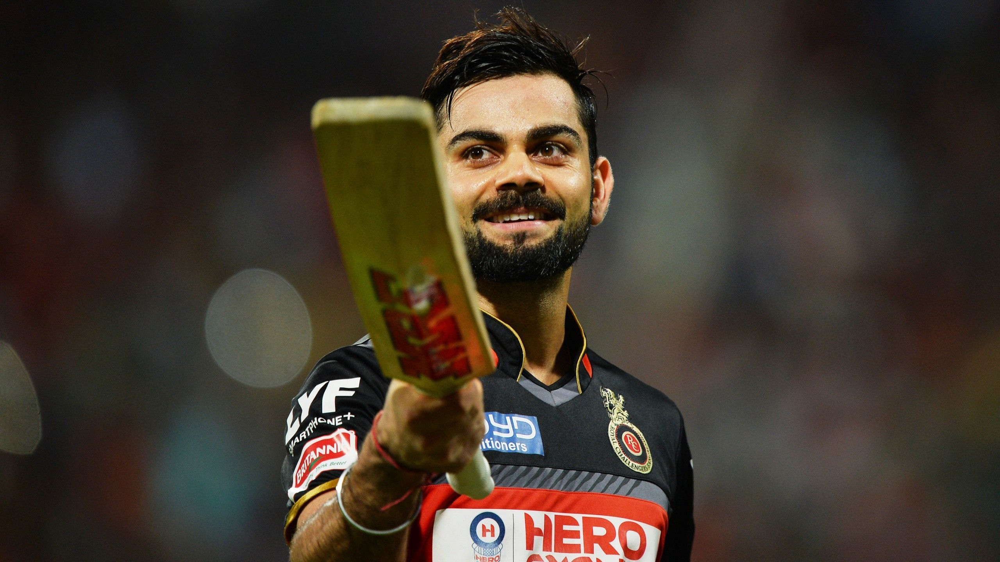

Thanuku Akshithakshiththanuku@gmail.com | +91 8919090880| Hyderabad |
 |
Motivated engineering graduate with a specialization in Artificial Intelligence and Machine Learning (AIML). Proficient in programming languages like Python and tools related to Data Analytics and AIML. Eager to contribute to a forward-thinking organization that supports continuous professional growth.
Python, SQL, Data Visualization, Power BI, NumPy, Pandas, Matplotlib, HTML, CSS, UI/UX
Utilized RFM scores (Recency, Frequency, Monetary value) to segment customers for targeted marketing. Performed time series analysis to forecast sales and identify seasonal trends.
Built a machine learning model to forecast air pollution levels for proactive public health planning.
Processed 12-band satellite images using RGB composites to convert them into human-readable visualizations.
I hereby certify that the above information is true and correct to the best of my knowledge and belief.